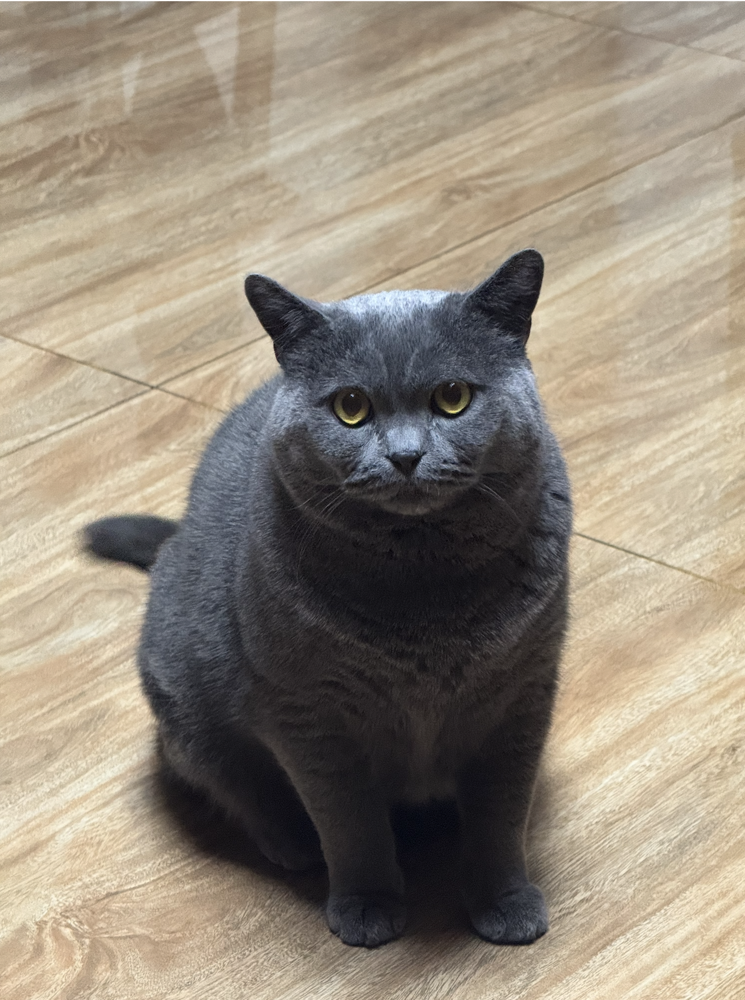
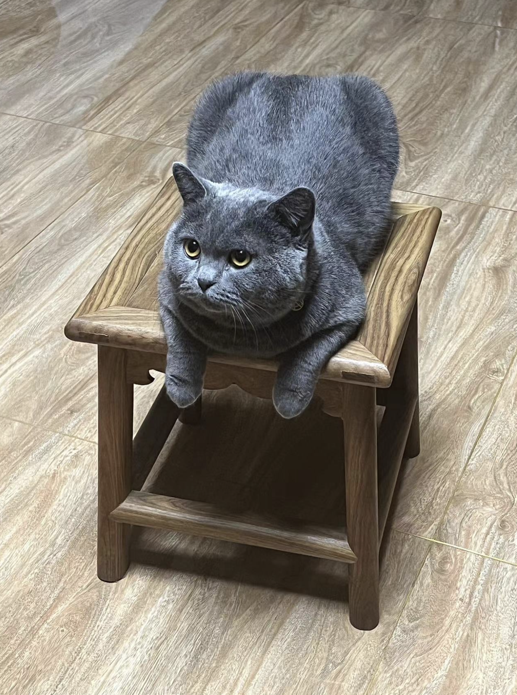
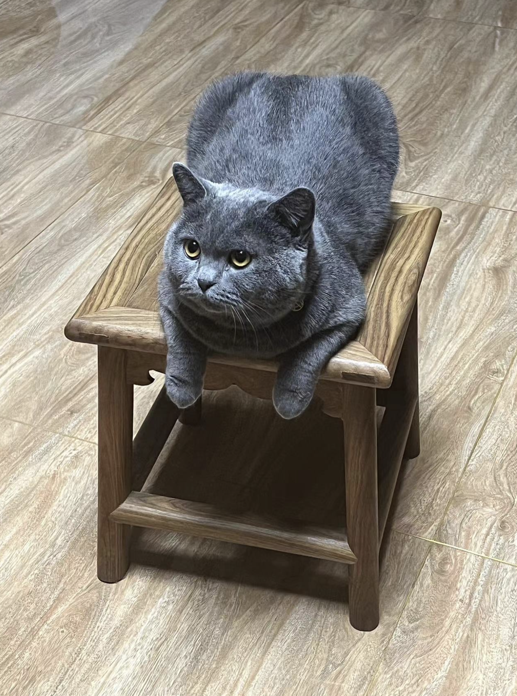
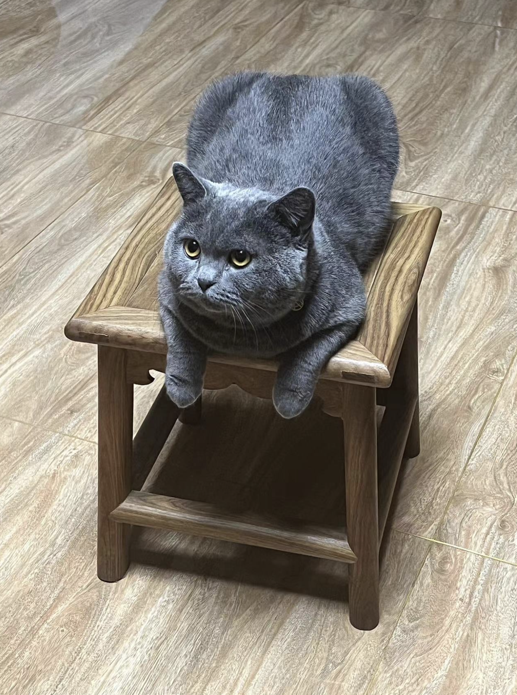

Hi there. I am a first-year PhD student in the xML Lab at ECE, NUS, advised by Prof. Xinchao Wang. Previously, I received my M.Sc. in Computer Engineering from NUS and my B.E. in Computer Science from Northwestern Polytechnical University.
Research
My research focuses on AI Safety (e.g., Membership Inference Attack, Unlearning) and Multimodal Learning (e.g., vision and language). My recent works explore:
- Data Privacy of Foundation Models (NeurIPS'25, Usenix Security'25)
- Efficient Transfer Learning (ICCV'25, ICLR'25, ECCV'24)
News
Selected Publications
Services
Reviewer
NeurIPS'24'25, ICLR'24'25, ICCV'25, WACV'24'25, CVPR'26, TKDE, TSNE, etc.
Miscellaneous
When I am not thinking about models, I am fortunate to be supervised by my cat, TunTun (吨吨 in Chinese), who consistently outperforms me in both curiosity and napping efficiency.

 

